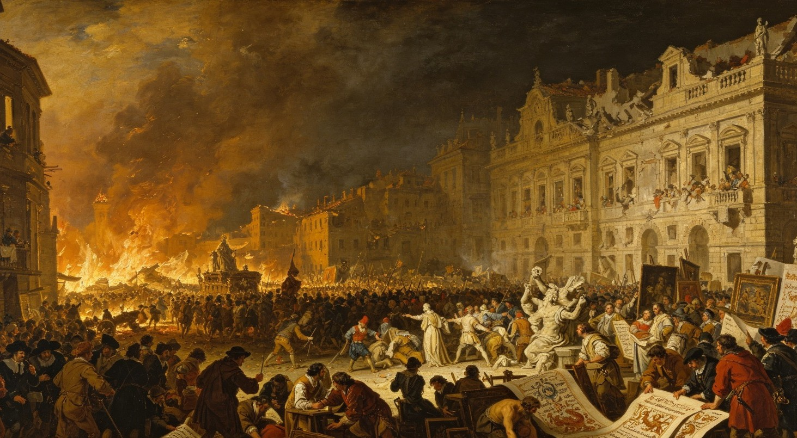
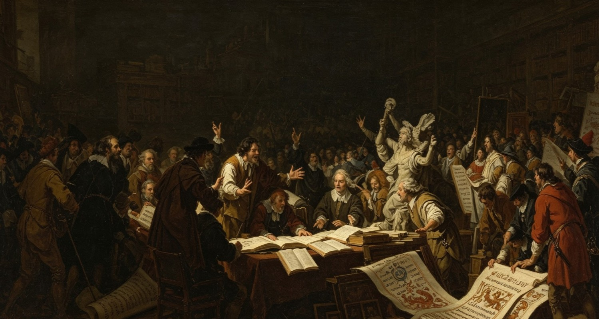
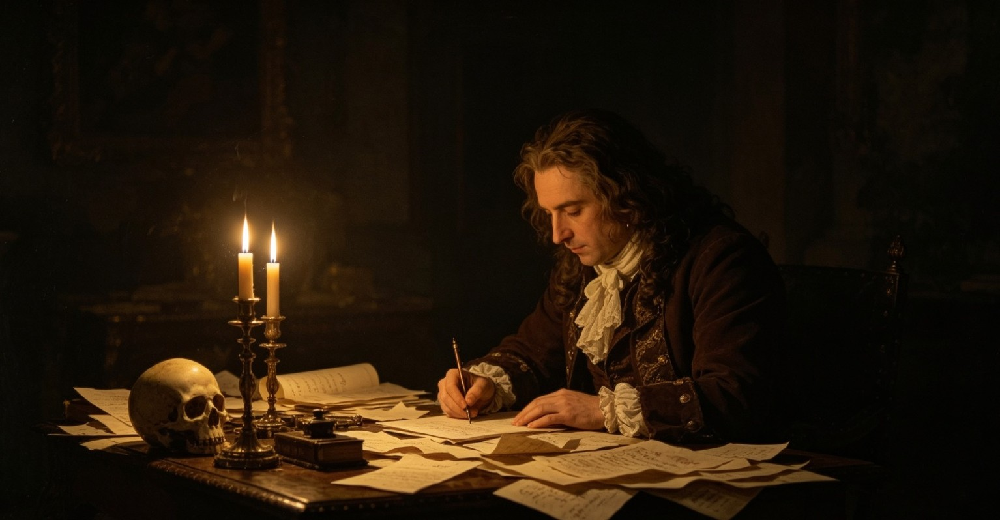
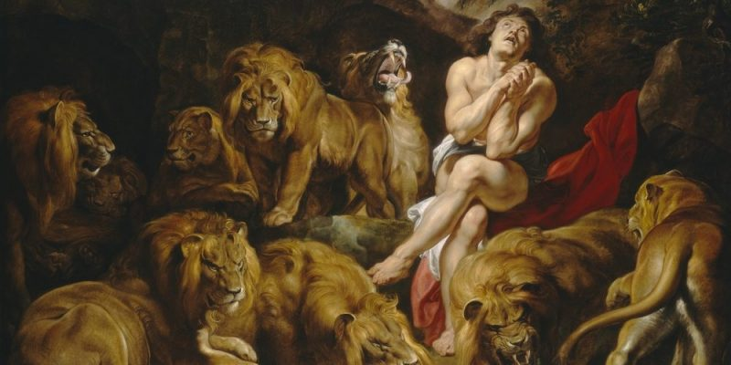
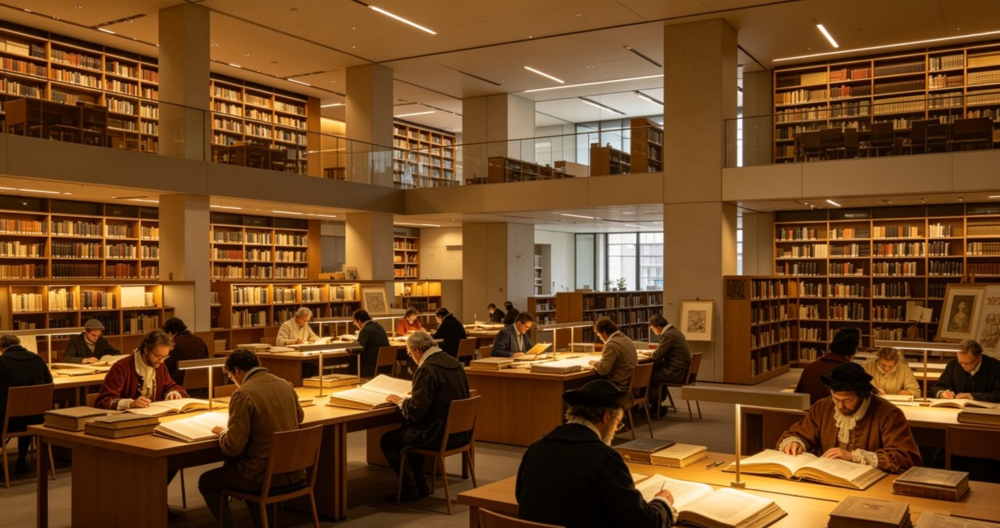

El Barroco
Introducción
El nombre “barroco”, según algunas teorías, proviene de la palabra en portugués usada para las perlas que tenían alguna deformidad o irregularidad. De allí que inicialmente el nombre se empleara para referir a cierto estilo artístico recargado, grandilocuente y excesivo. Posteriormente, este término se usó para aludir a una forma “degenerada” del Renacimiento y, finalmente, terminó siendo considerado como la negación de lo clásico.
El Barroco fue un período de la historia de la cultura en Occidente que abarcó el siglo XVII y principios del XVIII y marcó un cambio en la manera de concebir el arte. Tuvo impacto en numerosas áreas de la cultura y del saber como las bellas artes (arquitectura, pintura, escultura), las letras (literatura, poesía), y la filosofía.

Profundizacion
Contraste y ornamentación
El estilo barroco se caracterizó por la ornamentación sobrecargada, la expresión exagerada de las pasiones, la exuberancia, el detalle elaborado, la pompa y el contraste. Surgió en una época de tensiones tras la reforma protestante, la contrarreforma y el auge de las monarquías absolutistas, y se dio tanto en Europa occidental como en sus colonias de Latinoamérica, a partir del siglo XVII, tras el Renacimiento.
En el año 1527 ocurrió en Europa un hecho violento conocido como el Saco de Roma. Este suceso desencadenó una sacudida de los valores humanistas que habían florecido durante el Renacimiento, y dio lugar a un nuevo modo de entender la vida y el arte. La respuesta artística fue una corriente conocida como manierismo, que desafiaba los valores clásicos y perduró hasta los primeros años del siglo XVII, cuando apareció el Barroco.
Mientras el arte renacentista estaba inspirado en la armonía clásica: la simetría, el equilibrio y la proporción, el Barroco propuso todo lo contrario: desmesura, asimetría, exageración, dramatismo, ostentación y distorsión de las formas. El origen del Barroco se remonta al período italiano conocido como Seicento, y su nombre durante mucho tiempo fue empleado de manera despectiva para referir un arte recargado, caprichoso, engañoso, imperfecto e incluso de mal gusto.
Luego del siglo XIX, el término “barroco” se revalorizó y actualmente se emplea no solo para hacer alusión a este período, sino como un adjetivo para aludir a manifestaciones artísticas que no se rigen por las formas estéticas del clasicismo.

Caracteristicas
El Barroco cambió radicalmente el modo de hacer arte y de pensar la cultura. Algunas de sus principales características fueron:
1. Se oponía a las formas artísticas y valores del Renacimiento
El Renacimiento abarcó temas como el amor y la belleza y se caracterizó por rescatar la cultura clásica, el antropocentrismo, la búsqueda de la perfección, la simetría y las representaciones idealistas. El Barroco, por el contrario, estuvo teñido por el pesimismo, la angustia y la aflicción, estados que se vieron reflejados en obras dramáticas y exageradas.
2. Ponía el centro en la subjetividad y la emoción individual
En lugar de la representación de ideales (como bondad, belleza o perfección), el Barroco buscaba reflejar pasiones y situaciones subjetivas para despertar emociones intensas. Ponía el énfasis en las formas enérgicas, la exuberancia, la asimetría, el contraste y los efectos dramáticos obtenidos por efecto del detalle, el claroscuro, la textura o los recursos poéticos.
3. Exaltaba los valores de la religión y de la monarquía
Las monarquías absolutistas y la Iglesia católica fueron grandes mecenas del Barroco, por lo cual sus expresiones artísticas funcionaron como medio de propaganda frente a la creciente amenaza del protestantismo. Con este objetivo se construyeron grandes palacios, iglesias y catedrales que buscaban exaltar los referentes nacionales y religiosos.
4. Produjo obras ostentosas y complejas
El Barroco se caracterizó por hacer foco en los detalles y generar piezas exuberantes, sugerentes y recargadas de ornamentos. Se suele relacionar al Barroco con el vocablo latino horror vacui (miedo al vacío), que consiste en llenar por completo una superficie con decorado o figuras, sin dejar ningún espacio vacío.
5. Representó un cambio cultural total
El Barroco no fue solo un movimiento, sino una forma diferente de concebir y hacer arte. Se extendió por todo el continente europeo y sus colonias y tuvo exponentes en todos los campos y disciplinas artísticas, desde la pintura hasta la música, pasando por la escultura, la arquitectura y la literatura.

Pintura del Barroco
El Barroco buscaba rescatar los valores de la Iglesia católica. [Peter Paul Rubens, Daniel en el foso de los leones, 1615]
La pintura fue una de las expresiones artísticas más desarrolladas y de mayor diversidad durante el Barroco. Por un lado, se destacó la pintura religiosa llevada adelante por el catolicismo, que buscó propagar y defender su fe frente a la amenaza de la reforma luterana (que marcó el comienzo del protestantismo). La pintura promovida por la burguesía protestante, por su parte, se caracterizó por la producción de paisajes y escenas de la vida cotidiana, además de los temas religiosos, históricos y mitológicos. Algunos de los principales representantes del Barroco en pintura fueron: Diego Velázquez (1599-1660) en España, Rembrandt (1606-1669) en los Países Bajos y Michelangelo Caravaggio (1571-1610) en Italia
Los principales rasgos que caracterizaron a la pintura barroca fueron:
1. Utilizaba contrastes y juegos de luces y sombras (claroscuro). Los mayores cultores de esta técnica son conocidos como tenebristas y su máximo exponente fue el italiano Michelangelo Caravaggio.
2. Buscaba el realismo en el detalle y representaba aspectos cotidianos, combinados con elementos dramáticos o simbólicos.
3. Usaba el movimiento y la asimetría a través de escorzos, composiciones abiertas y diagonales.
4. Para lograr efectos fieles de profundidad, utilizaba técnicas como el sfumato (transición imperceptible entre los colores al superponerlos delicadamente) y la perspectiva.

Causas del fin
A mediados y finales del siglo XVIII, el barroco empieza a perder fuerza y da paso a nuevas corrientes, aunque su influencia permanece.
1. Se oponía a las formas artísticas y valores del Renacimiento
llega la Ilustración, un movimiento que valora la razón, la claridad, el orden, la sencillez y el conocimiento lógico. El estilo recargado, oscuro y emocional del barroco ya no responde a los gustos ni a la forma de pensar de la nueva época. Se considera excesivo, complicado y desordenado.
El estilo se vuelve más exagerado aún en su etapa final (lo que se llama "barroco tardío" o "churrigueresco"), hasta que se agota y se simplifica. Se abandonan los juegos de palabras complejos y la oscuridad expresiva.
Dejó una riqueza inmensa en recursos lingüísticos y expresivos que luego usarán autores posteriores. Sus temas sobre el tiempo, la muerte, el desengaño y la complejidad humana siguen presentes en la literatura de todos los tiempos. Autores como Góngora, Quevedo o Sor Juana pasaron a ser clásicos, y siguen estudiándose como lo mejor de la literatura en español. Sentó las bases para entender la literatura como una forma compleja de expresión, donde la forma y el contenido están profundamente unidos.